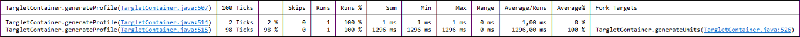
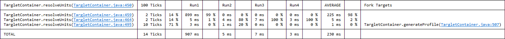

Klasse ProbingSubMonitor
- Alle implementierten Schnittstellen:
IProgressMonitor,IProgressMonitorWithBlocking
sub monitor that automatically collects and reports usage statistics.
It is normally very challenging to find out how much time a program really spends in the different parts of the monitored methods or how often these parts get executed. Stepping through the program with a debugger obviously leads to distortion that renders the observations meaningless and adding extra code to measure a runtime scenario realistically is not nice from a maintenance point of view.
As a solution to this problem this class offers the possibility to transparently instrument SubMonitor instances such that they automatically
collect and report all kinds of statistics that may help to enhance the user experience. Sometimes it would even indicate to remove some progress monitoring
because it turns out that almost no time is being spent in a particular part of the program. Another typical result from the analysis is the understanding of
one time effects that might need special consideration.
Instances of this class can be created explicitly with the Progress.progress() factory methods
that take a SubMonitor.ProbingMode argument. Implicit (automatic) instrumentation can be controlled with the "submonitor.probing"
system property as follows:
-
off - All
monitorsthat are not created with an explicit probing mode will not collect any usage information. No extra heap space or CPU time is allocated to these monitors. -
standard - All
monitorsthat are not created with an explicit probing mode will collect and report only statistical usage information. The amount of heap space allocated for this information is constant over time. -
full - All
monitorsthat are not created with an explicit probing mode will store and report all collected probes. The amount of heap space allocated for this information scales with the number ofmonitorinstances that are created over time.
This class registers a shutdown hook that dumps the probing results to the console when the program ends.
By setting the "submonitor.probing.trace" system property to the value "true"
probing results are continuously dumped as they become available.
The probing results are formatted as tables per monitored method. Each row of a table corresponds to a call to the SubMonitor.worked() or SubMonitor.newChild()
method. The first column of a table displays the location of that call, the content of the following columns depends on the probing mode used for a monitored method.
Example of the probing mode STANDARD:

Example of the probing mode FULL:

The tables in the two examples above have smooth borders that can only be displayed correctly in consoles with UTF-8 encoding. The console encoding
can be configured on the Common tab of the launch configuration dialog. In addition the rendering of smooth table borders must be explicitly enabled
by setting the "submonitor.probing.borders" system property to the value "smooth".
Without this setting tables are rendered with "-", "+" and "|" characters that display correctly regardless of the console encoding.
Quick navigation from the table cells to the corresponding code locations is supported by clickable links in the console tables. This way the collected information can be converted into real enhancements of the monitoring code quickly and easily.
Important note: Avoid to load this class (i.e., to call any of its methods) unless you intend to actually use probing monitors. When this class is loaded it spawns a thread to collect unused progress monitors and to free up the heap space allocated to their probes. The shutdown hook mentioned above is also registered when this class is loaded.
- Seit:
- 3.4
- Autor:
- Eike Stepper
-
Verschachtelte Klassen - Übersicht
Von Klasse geerbte verschachtelte Klassen/Schnittstellen org.eclipse.net4j.util.om.monitor.SubMonitor
SubMonitor.ProbingMode -
Feldübersicht
Von Klasse geerbte Felder org.eclipse.net4j.util.om.monitor.SubMonitor
DEFAULT_WORK, SUPPRESS_ALL_LABELS, SUPPRESS_BEGINTASK, SUPPRESS_NONE, SUPPRESS_SETTASKNAME, SUPPRESS_SUBTASKVon Schnittstelle geerbte Felder org.eclipse.core.runtime.IProgressMonitor
UNKNOWN -
Methodenübersicht
Von Klasse geerbte Methoden org.eclipse.net4j.util.om.monitor.SubMonitor
beginTask, clearBlocked, convert, convert, convert, convert, convert, convert, detectCancelation, detectCancelation, eq, internalWorked, isCanceled, newChild, newChild, newChild, setBlocked, setCanceled, setTaskName, setWorkRemaining, skipped, skipped, subTask, workedVon Klasse geerbte Methoden java.lang.Object
clone, equals, finalize, getClass, hashCode, notify, notifyAll, wait, wait, waitVon Schnittstelle geerbte Methoden org.eclipse.core.runtime.IProgressMonitor
slice
-
Methodendetails
-
worked
public void worked(int work) - Angegeben von:
workedin SchnittstelleIProgressMonitor- Setzt außer Kraft:
workedin KlasseSubMonitor
-
done
public void done()- Angegeben von:
donein SchnittstelleIProgressMonitor- Setzt außer Kraft:
donein KlasseSubMonitor
-
childDone
public void childDone()- Setzt außer Kraft:
childDonein KlasseSubMonitor
-
toString
-
reportStatistics
public static void reportStatistics() -
resetStatistics
public static void resetStatistics()
-